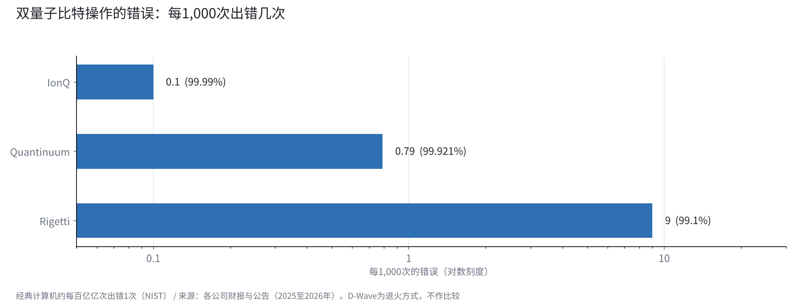
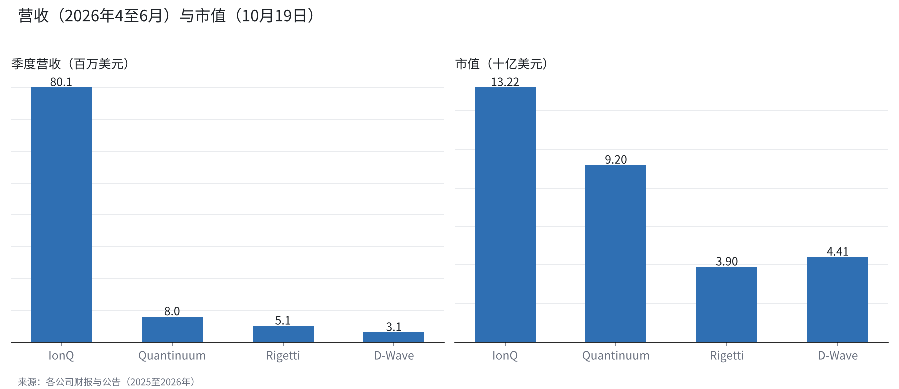

用方式和数字比较4家量子计算公司
IonQ、Quantinuum、Rigetti和D-Wave。同样叫量子，制造方式和赚钱方式各不相同。
把错误率、营收和手头资金排在一起，就能看到4家公司现在所处的位置。
我持有量子股，IonQ已经卖出，正挂着限价单等待。这里放的是那个判断背后的材料。

量子计算难在哪里
经典计算机用0或1的比特来计算。量子计算机使用叠加了0和1的量子比特，被期待在特定问题上快得多。
量子比特还能和其他量子比特形成“纠缠”。这一性质，是人们期待它用于分子计算、密码破解和物流优化的原因。
难点在于量子比特非常脆弱。热、振动或微弱的电磁波，都会让状态崩溃。美国国家标准与技术研究院（NIST）说明，现在的量子比特大约每1,000次操作出错1次。经典计算机大约每百亿亿次才出错1次。
填补这个差距的是“纠错”。把许多物理量子比特捆在一起，当作1个“逻辑量子比特”来用。Google在2024年用一种叫表面码的方法证明，捆绑的数量越多，错误越少（arXiv:2408.13687）。
所以竞争的核心，在于错误率和捆绑方式，多于量子比特的数量。比较这4家公司时，我也先用这把尺子。
4种方式：离子、超导与退火
IonQ和Quantinuum采用“离子阱”方式。在真空中用电场让原子离子悬浮，再用激光操作。两家都使用钡离子，强项是量子比特之间连接灵活、错误少。弱项在于操作速度和设备的扩大。
Rigetti采用“超导”方式，把冷却到极低温的电路做成量子比特。它可以借用半导体制造技术，做得快，但错误偏多。它用连接小芯片的“芯粒”方式扩大规模。
D-Wave长期做“退火”方式。这是适合优化问题的专用结构，拥有超过4,500个量子比特的Advantage2。2026年它以约5.5亿美元收购了一家门型公司，也把脚伸向了通用方式。

比较错误率
我按各公司的公告，排列了双量子比特操作的准确度（保真度）。IonQ的试作机超过99.99%（2025年10月），Quantinuum的Helios为99.921%，Rigetti的Cepheus-1-108Q中位数为99.1%。
换算成每1,000次的错误，IonQ约0.1次，Quantinuum约0.8次，Rigetti约9次。离子阱的两家，比超导少了约1个数量级。
Quantinuum宣布在98个量子比特的Helios上运行了48个逻辑量子比特，逻辑保真度达到99.9995%。在纠错的演示上，我认为它目前处于领先。
D-Wave的退火无法和门型机用同一把尺子比较，所以我没有放进图里。

赚钱方式与手头资金
2026年4至6月，IonQ的营收为8,010万美元（同比增长287%），远远领先另外3家。Quantinuum为800万美元，Rigetti为510万美元，D-Wave为310万美元。
IonQ的净亏损高达18.68亿美元，但手头现金约30亿美元。10月14日，它以每股40美元决定增资20亿美元，并附上1亿股、行权价69.46美元的7年期认股权证。
Rigetti现金5.41亿美元且没有借款，还拿到了美国商务部最多1亿美元支持的意向书。Quantinuum在2026年6月以每股60美元上市，Honeywell持有约49.1%的表决权。
10月19日的市值，IonQ为132.2亿美元，Quantinuum为92亿美元，D-Wave为44.1亿美元，Rigetti为39亿美元。市值的差距，远小于营收的差距。市场是在为方式和未来的路线定价，多于为眼下的营收定价。

用一张表看4家公司
把到这里的数字放在一起。
| 公司 | 方式 | 主要机型 | 双量子比特保真度 | 4至6月营收 | 市值（10月19日） | DARPA QBI |
|---|---|---|---|---|---|---|
| IonQ | 离子阱 | Tempo／Superion 256（2027年） | 超过99.99%（试作） | 8,010万美元 | 132.2亿美元 | 阶段C |
| Quantinuum | 离子阱 | Helios（98量子比特） | 99.921% | 800万美元 | 92亿美元 | 阶段B |
| Rigetti | 超导 | Cepheus-1-108Q | 99.1%（中位数） | 510万美元 | 39亿美元 | ― |
| D-Wave | 退火＋门型 | Advantage2（超过4,500量子比特） | ― | 310万美元 | 44.1亿美元 | ― |
从表上看，错误少是离子阱的两家，营收是IonQ，没有借款是Rigetti，现在能用的规模是D-Wave。没有哪一家在每一行都领先。
国家的评价：DARPA的最终阶段
美国国防高级研究计划局（DARPA）正在推进一项识别实用量子计算机的计划（QBI）。10月8日，包括IonQ在内的4家公司进入了最终的阶段C，预计可获得最多3亿美元的支持。
Quantinuum停留在阶段B。技术数字领先的公司，没有在国家的评选中晋级。也许光看错误率还不够，扩大规模的路线也在被审视。
商业化的路线
IonQ的目标是2027年1万个物理量子比特，2030年200万个物理量子比特、4万至8万个逻辑量子比特。256量子比特的Superion预计在2027年交付。它还以最多13亿美元的股票收购Elisity，扩展到包括后量子密码在内的安全领域。
Quantinuum公布了按世代的计划：2027年的Sol，2029年的Apollo。Rigetti用芯粒增加数量，D-Wave一边用退火服务优化客户，一边加快门型的开发。
4家公司现在的营收，大多还来自研究机构和政府合同。要变成谁都在用的工具，还需要时间。
我是这样看的
在量子股上，我各持有1,000股Rigetti和D-Wave。10月13日，我卖出了全部2,500股IonQ，其中一半1,250股挂了28.50美元的限价单在等。
我选择IonQ的理由，是离子阱方式和与DARPA的关系。今天的比较让我用数字确认了这两点：错误率低约1个数量级，并且留在了DARPA的最终阶段。
另一方面，我认为这次增资对现有股东不利。所以我不改前提，等待价格。方式领先的公司和股价领先的公司，未必是同一家。
看量子公司时，我按3个顺序确认数字。第一是错误率，第二是手头资金能支撑几年研究，第三是与政府和大企业的合同是否持续。股价放在那之后看。
量子仍处在从研究走向商业化的途中。只要数字不背离我的前提，我会把方式不同的公司分开，一点点地继续持有。
来源
- NIST“Quantum Computing Explained”https://www.nist.gov/quantum-information-science/quantum-computing-explained
- Google Quantum AI, arXiv:2408.13687 https://arxiv.org/abs/2408.13687v1
- IonQ 2026年第2季度业绩 https://www.ionq.com/news/ionq-announces-record-second-quarter-2026-revenues-growing-287-yoy
- IonQ 20亿美元增资 https://investors.ionq.com/news/news-details/2026/IonQ-Announces-Pricing-of-2-0-Billion-Equity-Offering/default.aspx
- IonQ 路线图 https://www.ionq.com/blog/ionqs-accelerated-roadmap-turning-quantum-ambition-into-reality
- Quantinuum Helios https://quantinuum.com/blog/introducing-helios-the-most-accurate-quantum-computer-in-the-world
- Quantinuum 2026年第2季度业绩 https://www.quantinuum.com/press-releases/quantinuum-reports-second-quarter-2026-results
- Rigetti 2026年第2季度业绩 https://investors.rigetti.com/news-releases/news-release-details/rigetti-computing-reports-second-quarter-2026-financial-results
- D-Wave 2026年第2季度业绩 https://www.dwavequantum.com/company/newsroom/press-release/d-wave-reports-second-quarter-2026-results/
- DARPA QBI 阶段C https://www.govconwire.com/articles/darpa-quantum-benchmarking-initiative-stage-c
照片：Planet Volumes／Laura Ockel（Unsplash）。图表由YUKI CAPITAL制作
每天的数字与判断，记录在X上。